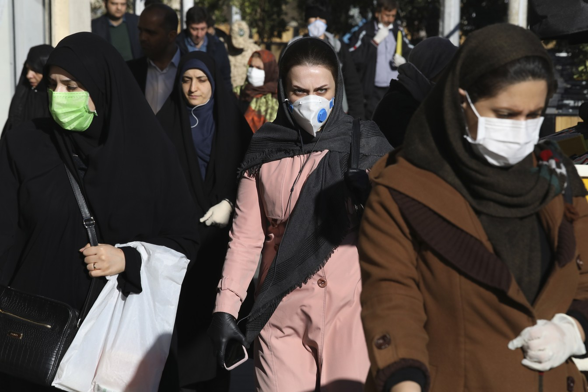

Mais de 60% dos países atingidos pelo Covid-19 têm apenas casos importados da doença Houve transmissão local da doença em 37,5% dos países afetados, e 30% tiveram apenas um caso da doença, segundo levantamento do G1.  Pedestres andam com máscaras contra o Covid-19 em Teerã, no Irã. O país tem o maior número de mortes pela doença fora da China.
Caso de coronavírus e número de mortes no Brasil 16 de Abril de 2020 Secretarias estaduais de saúde contabilizam 28.912 infectados em todos os estados e 1.760 mortos. Tocantins registra a primeira morte, e Brasil passa a ter mortos em todas as UFs. As secretarias estaduais de Saúde divulgaram, até as 22h00 desta quarta-feira (15), 28.912 casos confirmados do novo coronavírus (Sars-Cov-2) no Brasil, com 1.760 mortes. Com a primeira vítima no Tocantins, Brasil passa a ter mortos pela Covid-19 em todas as UFs. No início da madrugada desta quarta, o Tocantins divulgou a primeira morte do estado: uma servidora da Secretaria Municipal de Saúde de 47 anos, que estava internada desde o dia 18 de março na UTI de um hospital particular. São Paulo tem 11.043 casos confirmados e 778 mortes em todo o estado. O Rio de Janeiro confirmou 3743 casos e 265 mortes. Ceará tem 2.291 infectados e 124 mortos, Pernambuco registrou 1484 casos e 143 mortes, Minas Gerais tem 903 casos e 30 mortes e Santa Catarina tem 884 casos e 29 mortes. O Rio Grande do Sul tem 747 casos confirmados do novo coronavírus e 19 mortes e o Paraná chegou a 816 casos e 41 mortes.
PODCAST O Assunto #166: Mandetta fica até quando na Saúde? O Assunto - Com Renata Lo Prete - Atualizado Em 16/04/2020
17 de Abril de 2020 Mandetta é demitido em meio à crise da Covid-19 e Bolsonaro escolhe o médico oncologista Nelson Teich para o Ministério da Saúde. Brasil confirma mais 188 mortes nas últimas 24 horas e óbitos por coronavírus chegam a 1.924 no país. Acompanhe ao vivo a cobertura da crise da Covid-19 A novela acabou. Luiz Henrique Mandetta foi demitido do posto máximo no Ministério da Saúde por Jair Bolsonaro em plena crise do coronavírus. O anúncio foi feito pelo próprio Mandetta no Twitter, na tarde desta quinta-feira. “Quero agradecer a oportunidade que me foi dada, de ser gerente do nosso SUS, de pôr de pé o projeto de melhoria da saúde dos brasileiros e de planejar o enfrentamento da pandemia do coronavírus, o grande desafio que o nosso sistema de saúde está por enfrentar.”, escreveu o ex-ministro. Para substituir Mandetta, Bolsonaro escolheu o médico oncologista Nelson Teich. Teich se reuniu na tarde desta quinta-feira com o presidente, pouco antes de o mandatário se encontrar com o próprio ex-ministro. Luiz Henrique Mandetta, do Ministério da Saúde que foi demitido pelo presidente Jair Bolsonaro. JOEDSON ALVES / EFE